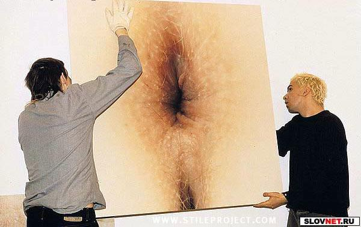

Каждому своё
Шлёма Арбайтман
Делать нехуй, бешки скурены, чешется яичко и немного хочется спать в честь окончания очередной ёбаной рабочей недели. Стало быть, пришло самое время написать статью о турнирном раскладе Кубка колотиловки (Мамин Сибиряк) и о том, что день грядущий нам готовит. Мы постараемся наиболее полно описать турнирную ситуацию и предугадать, чем закончатся матчи последнего тура группового этапа, попутно думая о том, почему всем нам довелось родиться именно в этой блядской стране, где даже при наличии зюзе у любого индивидуума есть только два выбора - бухать или не бухать ссаный алкоголий.
Группа Щ
В этой группе определилась команда, занявшая последнее место - речь об "FC Kixa". Дебютант турнира в первом круге плей-офф за "Жабры содомита" на выезде сразится с действующим обладателем Кубка колотиловки "KOKALLIKuHbI KAHuKy/IbI", который финишировал на третьей строчке в группе Ю. В четырёх матчах "кексы" не набрали ни одного очка при разнице мячей 2-8, в то время как "кокахи" финишировали с очком. За первое место в трио Щ ведут борьбу "FC MEKAY" и "MO4A HA nEPEnPABE", причём первый является явным фаворитом. Для того, чтобы опередить "кхе-кхе", команде МО4А нужно одолеть соперника на своём поле с разницей в четыре мяча. Сами понимаете, это нереально, хоть у "мочевинников" никто и не дисквалифицирован. С другой стороны, на Газзаева в памятном Кубке УЕФА-2004/05 тоже ставили лишь самые оголтелые поклонники ЦСКА и денег.
Группа Ю
Тут всё предельно понятно уже по итогам пятого тура - "FC Spartak Seattle" финишировал первым, второе место осталось за "FC Da Boyz", а "кокашки" остались в ебенях. Как уже говорилось выше, дружина Романа Ярно попытается соскочить с "жабр" в домашней дуэли с "FC Kixa". В то же время, поскольку последний матч в группе не будет иметь абсолютно никакого турнирного значения, стоит ждать появления на поле неувядающего Ари Лемпинена, который мечтает во второй раз подряд получить Трофей Игоря Нетто, хоть ныне уже влачит. Также наверняка сыграют на "Kykypy3HbIE no4atku Arena" молодые оборонцы хозяев, второй вратарь на позиции форварда и внучатый племянник тренера Диллона Ракнитца, которому неймётся попасть в историю, как неймётся попасть хуем в пизду некоей девки небритому детине по итогам дискотеки в клубе "Ла-Рокка", что на Бривибас 96.
Прогноз
Чуда, естественно, не произойдёт. А это значит, что в 1/4 финала нас ждут сразу две дуэли команд, исповедующих одинаковые стратегии. Супероборонительные "мекающие" и "кукурузные" сойдутся в очном бою на стадионе "Петровский", а "мочевые" в гостях попытаются взять реванш у спартаковцев за поражение в четвертьфинале прошлогоднего турнира.
Группа Э
Как и предсказывали эксперты да злопыхатели, борьба в этой группе вышла самой интригующей. Перед последним туром каждая команда может как пробиться в плей-офф, так и остаться последней. "Imanta Beavers" уже сыграл все четыре матча и набрал шесть очков при разнице мячей 4-6. Столько же в активе "FC Marshal Riga" (разница мячей 5-3), который в последнем туре на выезде сразится с "FC Zivju Fileja". Для выхода в четвертьфинал "маршакам" достаточно не проиграть с разницей в пять голов. Положение "рыбаков" не столь безоблачно - команду Дарко Оцоколича устроит победа с любым счётом, а выигрыш с разницей в два мяча принесёт "феле" первое место в группе. Наконец, "бобры" выйдут в плей-офф лишь если "FC Zivju Fileja" не победит, или же выиграет со счётом 5:0 и больше. Пожалуй, это единственный поединок последнего тура группового этапа Кубка колотиловки (Мамин Сибиряк), в котором действительно присутствует интрига.
Группа Я
"Bender Selection" вихрем пронёсся сквозь горнило группового этапа, одержав четыре победы при разнице шайб 15-1. "Селекционеры" обеспечили себе преимущество родных стен в плей-офф вплоть до финала. Упорнейшее сопротивление главному фавориту оказали "LLIKyPKA OT COn/Iu" и "Vot tak smrad", которые во второй раз принимают участие в самом престижном клубном турнире интернета. "Сопляки" имеют шикарные шансы на выход в 1/4 финала - в последнем матче с "коричневыми" на своём поле им достаточно не проиграть с разницей в три мяча, причём счёт 3:0 "смрадных" не устроит. Напомним, что первый поединок между соперниками на арене "Poligon", где состоится финал Кубка колотиловки (Мамин Сибиряк), завершился триумфом адептов Латушки с результатом 3:0.
Прогноз
Почему-то существует уверенность, что "маршаки" продуют, ибо "Играть контратаки с гнилой защитой - жесть". Это подтверждает и недавно выпущенная игра-симулятор "Рыбные против Маршалов" (http://molotilovka.eclub.lv/mamin/articles/art12game.html). Но - не крупно продуют, к сожалению. Стало быть, в 1/4 финала их ждёт выездная баталия с "Bender Selection", путь которого в финал вымощён всякой хуйнёй, в чём он нисколько не виноват. В другой четвертьфинальной паре, видимо, сыграют дебютанты прошлогоднего турнира - "LLIKyPKA OT COn/Iu" и "FC Zivju Fileja". Кто будет хозяином в этой паре сказать архисложно. Разве что, рэндом. Наконец, "Иманта Биверс" в первом круге плей-офф за "Жабры содомита" примет дома "Vot tak smrad".
Естественно, прогнозы - дело неблагодарное, равно как и писанина на официальный сайт турнира. Стараешься, строчишь как окаянный, попёрдывая в темноту, а потом читатель, зевая, нехотя изучит данный материалец, после чего покритикует и пожурит. Дескать, "хуйню вы написали, уважаемый" или "автор пасквилей ебучих продал душу сатане". "Спасибо" не скажут никогда в жизни, не говоря уже о честно полагающемся гонораре. Но мы всё равно будем из последних сил нести знамя СМИ в массы (тафтология), даря вам столь необходимые крупицы информации (тафтология). Не скажу, что до конца будем, но - пока курятся бешки, точно будем. Кстати, звонит телефон...
